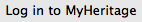
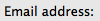
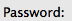

from sikuli.Sikuli import App, Pattern
from Config import Config
import Helpers
import os
import baseCases
reload(baseCases)
import unittest
import HTMLTestRunner
project_name = Helpers.generate_random_string()
class NegativeLoginTest(unittest.TestCase):
baseCases.BaseCases.testOpenApp()
if not exists(Pattern().similar(0.80)):
baseCases.BaseCases.testCloseApp()
baseCases.BaseCases.cleanUserData()
wait(1)
baseCases.BaseCases.testOpenApp()
click()
wait()
click(find().right(30))
type("testuser@testmh.com")
click(find().right(30))
type("123456")
click( )
wait()
# use image of actual UI
click()
popup("Negative Login test is sucessfull")
Config.init()
suite = unittest.TestLoader().loadTestsFromTestCase(NegativeLoginTest)
outfile = open(Config.get_reports_path() + "/%s.html" % (project_name), "w")
runner = HTMLTestRunner.HTMLTestRunner(stream=outfile, title=' Report Title', description='desc..' )
runner.run(suite)
outfile.close()
)
wait()
# use image of actual UI
click()
popup("Negative Login test is sucessfull")
Config.init()
suite = unittest.TestLoader().loadTestsFromTestCase(NegativeLoginTest)
outfile = open(Config.get_reports_path() + "/%s.html" % (project_name), "w")
runner = HTMLTestRunner.HTMLTestRunner(stream=outfile, title=' Report Title', description='desc..' )
runner.run(suite)
outfile.close()